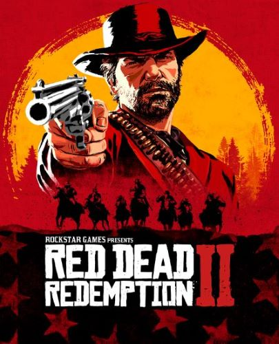

Red Dead Redemption 2
In 2010, rockstar games released a western story game. That game was the iconic and incredible red dead redemption. It was revolutionary for its time and paved the way for the current landscape of videogames. 8 years on the sequel to Red dead redemption released and that game is red dead redemption 2. Although ot is called a sequel, it is actually a prequel to red dead redemption. It follows an outlaw in a gang called Arthur Morgan. He is in the same gang as the protaganist of the last game John Marston. The gang was heavely talked about in the game but remained a mystery, only hearing breif points about it. It follows the gang an there adventures and chalenges. It has an incredible story and bueatiful graphics. I would rate this game a 5/5 and an experience I would reccomend to everyone
Playstation Store Xbox Store Steam StoreGrand Theft Auto 5

Rockstar Games have been making the Grand theft Auto franchise for over two decades now and grand theft auto 5 is the latest release in the series. Being one of the most popular and successful games ever released when it was released in 2013. Although the game was released over a decade ago it is still one of the best games on the market visually and performance wise.It shows the quality of the game by the fact that it has managed to stand the test of time so well for a long time with game being made with newer and more powerful applications avliable to them to improve there games but still are unable to out do in current age what rockstar produced in 2013. The game follows three main chararcters that can be swapped between during the game, Franklin, Micheal and Trevor. They have a very interesting and compelling story following the lives of all three of them and how they intertwine with each others story. It has a very good story and is a very graphically pretty game, I would rate this game a 4.5/5.
Playstation Store Xbox Store Steam Store